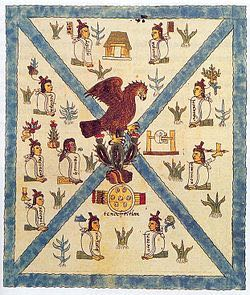

Ipan In Xictli Mextli
En el Ombligo de la Luna

Para los mexicas, el Templo Mayor ocupaba el centro del universo y por esa razón no podía ser cambiado de lugar. A ello se debe que cada vez que querían agrandarlo, se construía un nuevo edificio sobre el anterior conservando las mismas características fundamentales, es decir, dos capillas en la cúspide y escalinata doble en la fachada principal. De esta manera se procedió, al menos en siete ocasiones. 
La zona arqueológica del Templo Mayor comprende 1.2 hectáreas, predominando sin duda el edificio religioso más importante de Tenochtitlan, dedicado a Huitzilopochtli, dios solar de la guerra, y a Tláloc, el dios de la lluvia. Sin embargo, en sus inmediaciones se rescataron otras construcciones relevantes: hacia el norte tres adoratorios de menor tamaño, entre ellos un Altar Tzompantli y uno de dos templos rojos dedicados al dios Xochipilli, así como la Casa de las Águilas, de mayores proporciones; hacia el poniente, y muy cerca de donde se encuentra el museo, pueden apreciarse los vestigios parciales de la gran plataforma que limitaba al recinto sagrado de México-Tenochtitlan por sus cuatro costados. Finalmente, hacia el sur se halla el segundo de los templos rojos consagrados al dios Xochipilli, los cuales por cierto imitan el estilo arquitectónico teotihuacano.